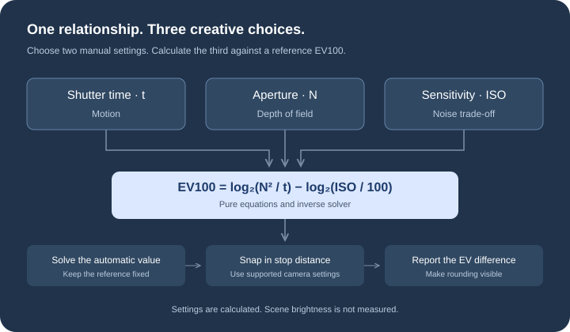

An interactive photography tool
Make sense
of every stop.
A faster shutter. A wider aperture. A little more ISO. Discover how three settings work together to shape an exposure.
Explore the calculatorNo account. No installation. Just curiosity.
Find your balance.
Choose a scene, then adjust two settings. The third follows.
Set a reference, then trade one camera setting for another. EV100 describes settings, not measured scene brightness.
Time & motion
Shutter speed
Slower captures motion. Faster freezes it.
Light & depth
Aperture
A lower f-number lets in more light and can soften the background.
Sensitivity & noise
ISO
Higher ISO can brighten a capture, with a possible noise trade-off.
Two Manual controls stay adjustable. Select a control’s mode button to choose which setting is calculated automatically.
Read the settings, then the scene.
Different settings. Similar exposure.
Explore the creative trade-offs. Each combination stays within half a stop of the calculated EV.
| Shutter | Aperture | ISO | Creative effect |
|---|
Learn from a photo.
Read the shutter speed, aperture and ISO recorded by your camera.
Your photo stays in your browser. The metadata reader loads from jsDelivr; image bytes are not uploaded by this tool.
The triangle, explained.
Exposure is a balancing act. Halve the shutter time and you need to let in more light another way to keep a similar exposure.
This tool solves that relationship, then maps it to practical camera settings. Your camera’s light meter still matters.
Explore the mathematics